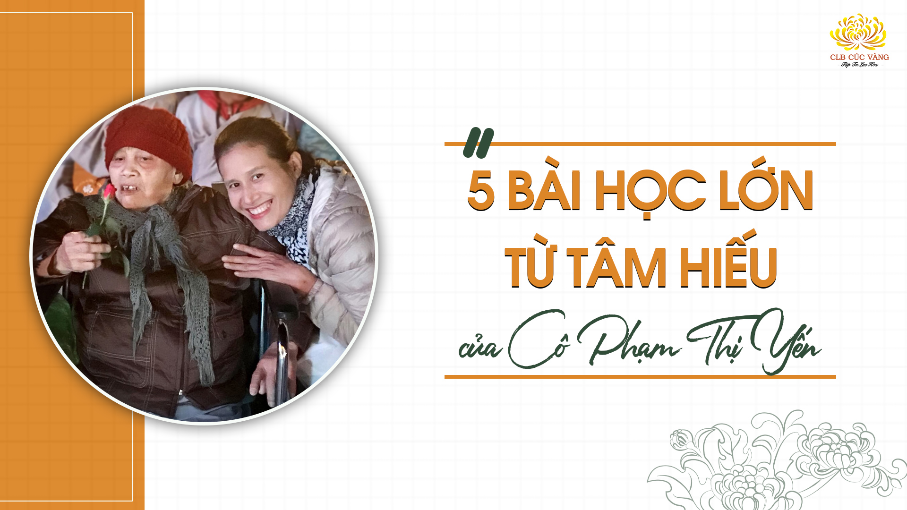

![[Video] Tri ân Sư Phụ - Người thành tựu đạo đức cho chúng con](../media.phamthiyen.com/files/news/2024/11/18/tri-an-su-phu-nguoi-thanh-tuu-dao-duc-cho-chung-con-202721.jpg)
[Video] Tri ân Sư Phụ - Người thành tựu đạo đức cho chúng con
Chúng con xin thành kính tri ân Sư Phụ - tri ân tấm lòng của Sư Phụ đối với Phật tử chúng con, tri ân tâm Bồ đề của Sư Phụ. Chúng con chỉ biết theo nguyện Bồ đề của Sư Phụ: Mỗi mỗi người biết đến Phật Pháp rồi thì hãy tinh tấn phát tâm Bồ đề, hộ trì Tam Bảo, chuyển tải Phật Pháp, rộng khắp thế gian.
Chi tiết![[Video] Tri ân Cô - người phụ nữ đã vun đắp sự tốt đẹp cho biết bao cuộc đời!](../media.phamthiyen.com/files/news/2024/10/22/tri-an-co-201706.jpg)
[Video] Tri ân Cô - người phụ nữ đã vun đắp sự tốt đẹp cho biết bao cuộc đời!
Tri ân Cô - người phụ nữ đã vun đắp sự tốt đẹp cho biết bao cuộc đời!
Chi tiết
Giải mã tại sao khóa sinh “choáng ngợp” khi gặp người phụ nữ rất đặc biệt là Cô
Tuy có bạn trước đó chưa hề biết hay đã từng biết Cô Phạm Thị Yến, qua những lần tiếp xúc và nghe Cô chia sẻ, nay đều dành cho cô những tình cảm đặc biệt
Chi tiết
Từ Liên bang Nga, Cộng hòa Séc về khóa tu: Một hành trình dài thật xứng đáng
Trong khóa tu mùa hè lần 2 năm 2022, nhiều bạn nhỏ đang sinh sống
Chi tiết
Phật tử “hết mệt” nhờ những điều trí tuệ từ Cô
Hơn 5000 khóa sinh có mặt tại chùa Ba Vàng trong Khóa tu mùa hè lần 2 năm 2022
Chi tiết
Cha và con gái: Hành trình từ Phú Quốc về Khóa tu mùa hè chùa Ba Vàng
Không biết mọi người có giống tôi, luôn có một nơi hằng mong mỏi được trở về để cống hiến và phụng sự – là nơi có thể tìm được sự an yên trong tâm hồn, cả gia đình, con cái của tôi cũng đều hạnh phúc khi ở đó. Đối với tôi, chùa Ba Vàng là một nơi như thế.
Chi tiết
Sư Phụ – Người Thầy khả kính dìu dắt chúng con trên con đường tầm cầu giác ngộ, giải thoát
Sư Phụ không chỉ là một vị thầy chỉ đường, mà còn là nơi nương tựa vững chắc để tiếp tục hành trình tu học và rèn sửa nội tâm thiện lành.
Chi tiết
4 mẩu chuyện ít ai biết về Cô: Tuy giản dị nhưng vô cùng đặc biệt
Những câu chuyện rất đặc biệt về Cô - thường không phải ai cũng biết, nếu đó không phải những người hay được thân cận Cô.
Chi tiết
Một người phụ nữ nhiều nghề: Người khiến thay đổi quan điểm về trí tuệ
Có thể nào, một kiến trúc sư, một đầu bếp, một nhạc sĩ, một nhà văn,... đều cùng là một người? Tuy thật hiếm có, nhưng tôi đã “gặp” một phụ nữ như vậy…
Chi tiết
Tri ân Cô - Người “Nhà giáo” luôn tận tâm, tận lực vì hạnh phúc của chúng con
Trong dòng cảm xúc tri ân hướng về ngày Nhà giáo Việt Nam 20/11, nương vào duyên lành này, các Phật tử trong CLB Cúc Vàng - Tập Tu Lục Hòa, CLB Tuổi trẻ Ba Vàng và CLB La Hầu La đã cùng nhau dâng lên Cô chủ nhiệm Phạm Thị Yến - người “Nhà giáo” đặc biệt của các Phật tử những đóa hoa tươi thắm với tấm lòng biết ơn sâu sắc.
Chi tiết![[Video] Sư Phụ - Bậc ân sư cao quý trong cuộc đời chúng con!](../media.phamthiyen.com/pty/posts/su-phu-bac-an-su-cao-quy-trong-cuoc-doi-chung-con.jpg)
[Video] Sư Phụ - Bậc ân sư cao quý trong cuộc đời chúng con!
Đối với chúng con, Sư Phụ là người Thầy vượt trên hết tất cả các vị Thầy, đưa giáo án của Đức Phật - giáo án cao quý nhất cho chúng con…
Chi tiết
Những mẩu chuyện nhỏ kể về tâm tri ân rất đặc biệt của Cô Phạm Thị Yến đến Thầy của mình
Tâm tri ân của Cô đến Sư Phụ luôn thường trực mọi lúc, mọi nơi, trong từng lời nói, hành động khiến rất nhiều Phật tử khâm phục và noi theo.
Chi tiết![[Video] “Hạnh phúc vì có Cô” - Bài hát thay lời tri ân gửi tới người Thầy đặc biệt](../media.phamthiyen.com/pty/posts/hanh-phuc.jpg)
[Video] “Hạnh phúc vì có Cô” - Bài hát thay lời tri ân gửi tới người Thầy đặc biệt
Lắng nghe khổ đau, thế gian phiền não, dũng mãnh cầu đạo, chẳng màng lợi danh. Chắt chiu duyên lành, giúp người thoát khổ
Chi tiết![[Video] Tri ân Cô - Người phụ nữ bình thường nhưng rất đỗi phi thường](../media.phamthiyen.com/pty/posts/tri-an-co-1.jpg)
[Video] Tri ân Cô - Người phụ nữ bình thường nhưng rất đỗi phi thường
Hướng tới ngày phụ nữ Việt Nam 20/10, đại diện cho toàn thể Phật tử trong Câu lạc bộ Cúc Vàng, Câu lạc bộ Tuổi trẻ, Câu lạc bộ La Hầu La cùng những người có lòng yêu kính đối với Cô chủ nhiệm Phạm Thị Yến ở khắp mọi nơi trên thế giới - xin được gửi tới Cô những lời tri ân từ tấm lòng.
Chi tiết
Ít nhất một lần trong đời, phải đến Tứ Thánh tích với một người “dẫn đường” như Cô
7 ngày ở miền đất Phật, là vô vàn những câu chuyện ý nghĩa, những cảm xúc giá trị,... khiến trong tâm tôi có những thành tựu nhất định.
Chi tiết
Rơi nước mắt trong lễ rửa chân cha mẹ mùa Vu Lan báo hiếu 2022 chùa Ba Vàng
Cha mẹ - hai đấng song thân đã cho chúng ta thân mạng, hình hài; vất vả ngược xuôi, vật lộn với đời để cho ta manh áo, miếng cơm, con chữ,… Cha mẹ sẵn sàng đánh đổi cả cuộc đời để nuôi dưỡng, chăm sóc, chở che và ân cần chỉ dạy cho các con.
Chi tiết
Tri ân hai cụ thân sinh Sư Phụ Thích Trúc Thái Minh - Nguồn khởi sinh tâm hiếu
"Nhân mùa Vu lan, chúng con kính chúc ông bà sống lâu và luôn là tấm gương và điểm tựa để mỗi mùa Vu lan chúng con hướng về.
Chi tiết
Nửa vòng Trái đất từ Canada về chùa Ba Vàng: Sức hút mãnh liệt của Sư Phụ, Cô và lễ Phát Bồ đề tâm
Trước cửa phòng khách số 2 chùa Ba Vàng lúc 11h30 ngày 19/6/Nhâm Dần, một nhóm Phật tử đứng bồi hồi
Chi tiếtLần đầu về chùa công quả: Bất ngờ khi khám phá công việc của Phật tử chùa Ba Vàng
Tại sao nhiều người về chùa làm công quả thế? Sao mọi người tự giác làm các công việc chung như vậy?
Chi tiếtBạn Lê Trung Tuấn – chàng trai từng mang trong mình căn bệnh ung thư ác tính
Chi tiếtĐiều gì khiến bạn trẻ 19 tuổi có thể hóa thân xuất sắc vào nhân vật Ngài Tu Bạt Đà La 120 tuổi?
Đây là vai diễn được đánh giá vô cùng khó thể hiện do nhân vật có tính cách đặc biệt và diễn biến tâm lý phức tạp. Đặc biệt, bạn Lê Văn Nam còn rất trẻ (sinh năm 2003) trong khi Ngài Tu Bạt Đà La thời điểm đó là 120 tuổi. Vậy Nam đã làm thế nào để diễn tròn vai này?
Chi tiết[Video] Tôn vinh Cô - Người phụ nữ tô đẹp cuộc đời bằng đức hạnh và trí tuệ
20/10, tôn vinh Cô - người phụ nữ đức hạnh, trí tuệ và từ bi; tôn vinh Cô - người phụ nữ dệt thêu đức hạnh và làm đẹp cho cuộc đời...
Chi tiếtNhững mẩu chuyện báo hiếu đặc biệt trong mùa Vu Lan của Phật tử CLB Cúc Vàng
Đức Phật có dạy: “Tâm hiếu là tâm Phật, hạnh hiếu là hạnh Phật”. Với người đệ tử Phật, việc báo hiếu...
Chi tiết
5 câu chuyện nhỏ - 5 bài học lớn từ tâm hiếu của Cô Phạm Thị Yến
Những ai đi tu 10 năm, 20 năm; đọc một quyển kinh cho đến vạn vạn quyển kinh
Chi tiếtVậy là đã 3 mùa Vu Lan chúng con được thực hành hạnh hiếu với Cha mẹ. Con nhớ mùa Vu Lan đầu tiên
Chi tiết![[Video] Nếu Sư Phụ không xuất hiện ở nơi đời, chúng con đâu có được hạnh phúc chân thật](../media.phamthiyen.com/pty/posts/neu-si-phu-khong-co-tren-doi-chung-con-dau-co-hanh-phuc-chan-that.jpg)
[Video] Nếu Sư Phụ không xuất hiện ở nơi đời, chúng con đâu có được hạnh phúc chân thật
Nếu Sư Phụ không xuất hiện, không sinh ra nơi đời, thì chúng con đâu biết đến Phật, đâu thực hành được lời Phật dạy
Chi tiết
Kính mừng sinh nhật Sư Phụ Thích Trúc Thái Minh
Nam mô Phật Bổn Sư Thích Ca Mâu Ni! Kính bạch trên Sư Phụ (Thầy Thích Trúc Thái Minh)
Chi tiết
Cô - Ngọn đuốc trí tuệ đã thắp sáng cuộc đời con
Cô ơi…! Con ngồi lại để viết đôi dòng về Cô. Nhưng ngôn từ trong con thật hữu hạn
Chi tiết
Cả cuộc đời, ba đã vất vả rồi!
Kính thưa Ba! Lời đầu tiên con muốn nói “Chúng con thành tâm xin lỗi Ba”!
Chi tiết[Video] Chúng con thành kính tri ân hai cụ đã sinh thành ra Sư Phụ của chúng con!
Chúng con xin tri ân công đức của hai cụ đã sinh thành ra Sư Phụ của chúng con. Đây là nhân duyên khiến chúng con được lợi ích lớn, hạnh phúc lớn và là mở đầu trong các kiếp về sau để chúng con không còn trôi lăn...
Chi tiết